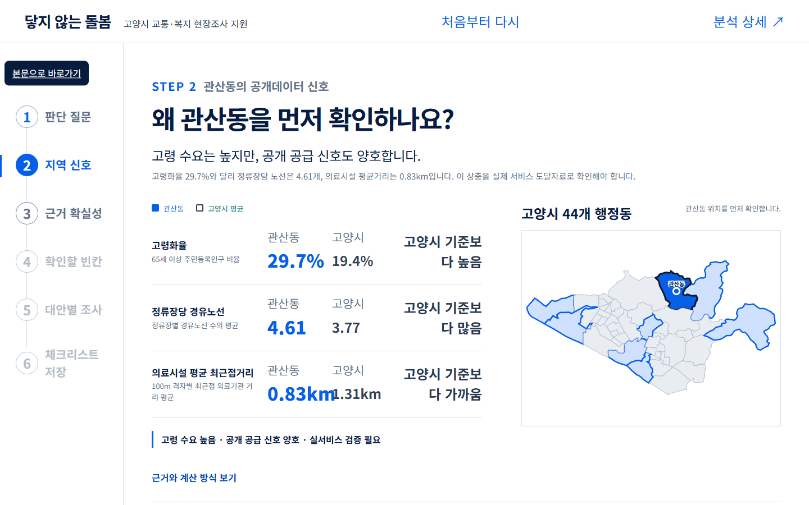

2026 고양시 빅데이터 활용 아이디어 공모전 · 팀 도달
돌봄이 필요한 곳,
이동부터 확인합니다.
저희가 확인한 공개자료에서는, 돌봄 수요와 실제 이동 가능성을 함께 검증한 결과를 찾지 못했습니다.
고양시 교통·복지 담당자를 위한 정책 사전검토 도구
문제 정의
찾은 사람과 갈 수 있는 길은 같은 데이터가 아닙니다.
사람을 찾는 기록 다음에, 그 사람이 실제로 갈 수 있는지 확인하는 기록이 필요합니다.
02분석 경계
지금 지도는 ‘실제 대상자·목적지’가 아니라 공개 대리자료입니다.
질문현재 사용아직 필요
누가 필요한가70세 이상 1인세대·고령인구온돌 대상자 위치
어디로 가는가HIRA 병·의원·약국실제 서비스 제공 위치
갈 수 있는가정류장·노선명 정적 표기배차·방향·환승·OD
따라서 현재 결과는 도입 결론이 아니라 실제 자료를 어디부터 결합할지 정하는 검증 순서입니다.
03행정 질문
결론이 아니라, 어디부터 무엇을 확인할지 묻습니다.
?
44개 동을 동시에 조사하기 어렵다면,
어느 동에서 실제 이동 기록을 먼저 확인할 것인가?
- 1공개 신호로 후보를 좁힌다
- 2중복·민감도를 먼저 점검한다
- 3실제 대상·목적지·운행을 결합한다
- 4대안을 비교하고 담당자가 결정한다
분석 방법
수요·의료·교통을 같은 100m 격자에서 비교했습니다.
65세 이상 인구
최근접 시설 직선거리
정류장당 노선 표기
현장검증 대상으로만 사용
26,595개 격자인구·시설 2026-06-30 · 버스 2025-08-25 · 경계 2026-04-01
05
고양시 신호
고양시 44개 동에서 서로 다른 신호가 겹칩니다.
낮음높음한 지도만으로는 같은 후보가 나오지 않습니다.
06
대표 사례 · 관산동
후보 8곳 중 관산동을 대표 사례로 읽습니다.
자동 선정이 아니라, 서로 다른 신호가 만나는 곳
29.7%고령화율고양시 19.4%
1,95770세 이상 1인세대세대 단위
4.61정류장당 노선 표기공급 부족 확정 아님
0.83km의료시설 평균거리직선거리 대리
수요는 높지만 기존 공급 신호도 양호합니다. 그래서 현장 확인이 필요한 대표 사례입니다.
제출 후보집합 8/8 재현순위는 일부 달라져 후보를 확정 순서로 해석하지 않습니다.
07피드백 반영
심사 피드백은 ‘확정’에서 ‘검증 순서’로 바꿨습니다.
제출 당시취약지역을 점수로 선정
→
의료시설·버스 대리값을 실제 이동처럼 읽을 위험
본선 보완후보에서 확인할 빈칸을 제시
중복진단·마을버스·복지시설·시간가정·DRT 권역을 분리
- 실제 대상자·서비스 위치 미사용을 한계가 아니라 다음 데이터 결합 계획으로 전환
- DSS 상관과 요소 제거 결과를 공개해 점수의 취약성을 먼저 설명
- DRT 하나를 정답으로 두지 않고 다섯 대안과 중단조건을 비교
DSS 자기검증
지표 하나를 빼면 후보 8곳 중 3곳이 바뀝니다.
버스 비효율 ↔ 의료거리 ρ=.931로 중복 가능성이 큽니다. 네 명세에서 모두 남은 곳은 고양동·관산동·행주동입니다.
09기존 교통 중복
마을버스는 ‘있음’만 확인됐고, 실제 이동은 아직 모릅니다.
목적지 확장
복지 목적지 594건을 확보했지만 좌표는 0건입니다.
593현재 웹 표시
5942026-06 공식 파일
0확보한 정확 좌표
다음 결합도로명주소 좌표 → 복지관·경로당·서비스 제공처 → 운영시간·이용자격좌표 전에는 접근성을 계산하지 않음
11
사전 시나리오
30분 도달률은 대기시간 가정에 따라 달라집니다.
이 수치는 정책 효과가 아니라 대기시간이 핵심 검증변수라는 것을 보여주는 가정표입니다.
12기존 DRT와의 차이
현재 똑버스 4권역과 돌봄 이동 후보는 같은 단위가 아닙니다.
4식사·고봉·덕은·향동 운영권역
14공개 목록 차량 시점값 · 2026-08-13
현재 DRT 질문권역 안에서 호출에 대응
돌봄 이동 질문대상자의 필수 목적지까지 도달
운영권역≠행정동. 향동→화전, 덕은→대덕·화전 대응은 별도 공간검증이 필요합니다.
대리자료 → 실제자료
실제 자료가 들어오면 대리결과를 검증·수정합니다.
수요·의료·정류장
대상자 격자·목적지·시간표·호출
순위일치·교체·누락을 기록
담당자 검토와 현장확인
맞으면우선 현장조사의 근거 강화
다르면대리변수·가중치·후보를 수정
자료가 없으면불확실성을 유지하고 결정 보류
정책 선택
다섯 대안을 비교한 뒤에만 이동지원 방식을 고릅니다.
선택 기준실제 도달시간 · 이용완료 · 기존서비스 중복 · 비용 · 개인정보 위험한 가지 답을 미리 정하지 않습니다.
15
MVP 시연
MVP는 6단계로 ‘확정하지 않는 판단’을 돕습니다.

오늘 필요한 결정
도입이 아니라,
데이터 결합 허가입니다.
1비식별 대상 격자
2실제 서비스 목적지
3배차·방향·호출 기록
돌봄이 필요한 곳을 찾았다면,
갈 수 있는 길까지 확인하겠습니다.
부록 A0 · 피드백 추적
심사위원 지적 여섯 가지를 모두 추적합니다.
지적보완남은 검증
실제 대상·62개 위치 부재대리/실제 경계 명시비식별 결합 필요
DSS 중복 가능성상관·VIF·ablation실제자료 재명세
마을버스 중복정적 존재 스크리닝배차·방향·OD
의료 중심 목적지복지시설 594건 확보좌표·시간·자격
기존 DRT 차별성4권역·14대 분리권역 공간검증
효과 제시시간 가정·KPI 설계사전·사후 실측
부록 A1 · 데이터 사전
숫자·단위·기준일을 한 장에 고정합니다.
값정의·단위기준일판정
1,057,438고양시 주민등록 인구 · 명확보
35,29570세 이상 1인세대 · 세대확보
1,893병·의원 1,397 + 약국 496 · 개소확보
2,095경계 안 버스정류장 · 개소노후
594공식 경로당 파일 · 행좌표 없음
부록 A2 · 후보 8곳
후보 8곳은 서로 다른 병목을 가집니다.
부록 A3 · 산식과 계보
산식과 데이터 계보를 공개합니다.
행정안전부인구·1인세대
→행정동·100m 격자공간 결합
→수요 신호동 단위 집계
HIRA병·의원·약국
→최근접 직선거리격자 가중평균
→의료 대리 신호실제 이동 아님
고양시버스정류장·노선명
→경계 내 공간결합정적 표기
→교통 공급 신호배차 없음
DSS = 0.5·z(CAG) + 0.3·z(버스 비효율) + 0.2·z(의료거리)
A3
부록 A4 · 가중치 민감도
가중치 45개 조합에서도 여덟 곳은 같지 않습니다.
45/45 포함은 ‘선정확률 100%’가 아니라 검토한 제한 범위에서 유지됐다는 뜻입니다.
A4부록 A5 · 공간 민감도
공간집중은 이웃 정의에 따라 달라집니다.
유의한 HH가 없어도 ‘문제가 없다’는 뜻이 아닙니다. 동 경계·이웃 정의에 따라 군집 판정이 달라집니다.
A5부록 A6 · DRT 교차표
똑버스 권역과 행정동 대응은 별도 검증이 필요합니다.
공식 운영권역행정동 대리 대응판정
식사식사동명칭상 대응
고봉고봉동명칭상 대응
향동화전동 일부공간검증 필요
덕은대덕동·화전동 일부경계 분할 필요
기존 팀의 ‘3개 동 제외’는 사후 대리매핑이며, 공식 권역 정확도 검증이 아닙니다.
A6부록 A7 · 마을버스 한계
마을버스는 배차·방향·OD가 빠진 1차 스크리닝입니다.
확인한 것
- 정류장별 노선명·유형 표기
- 동별 마을노선 존재 정류장 비율
- 고유 마을노선명 수
확인하지 못한 것
- 배차간격·첫차·막차
- 방향·환승·운행일
- 대상자→목적지 OD
따라서 ‘마을버스가 있다’ → ‘돌봄 이동이 해결됐다’로 해석하지 않습니다.
A7
부록 A8 · 시간 가정표
시간 시나리오는 효과예측이 아니라 가정표입니다.
항목가정실제 검증자료
도보0.8m/s 직선거리도로망·보행장애
접근·승하차5분 고정승하차 로그
대기5·10·15분호출→승차 시각
차량15km/h·거리 1.3배실제 경로·속도
환승없음노선·환승 기록
부록 A9 · KPI·중단조건
사전·사후 지표와 중단조건을 먼저 합의합니다.
도달30·45분 내 실제 도착 비율
완료예약 대비 서비스 이용완료
형평고령·장애·지역별 격차
중복기존 교통으로 대체 가능한 비율
비용완료 건당 총운영비
중단 대조 기준·사전값·최소 개선폭·개인정보 보호가 합의되지 않으면 운영 제안을 보류합니다.
A9
부록 A10 · 비용
비용은 원가를 받기 전까지 빈칸으로 둡니다.
완료 건당 비용총운영비 ÷ 완료 건수현재 산출 불가
1차량·운전 원가
2플랫폼·정차지 운영비
3운영시간·인건비
4완료 건수 정의
타 지역 단가를 고양시 비용처럼 옮겨 쓰지 않습니다.
A10부록 A11 · 주장 장부
모든 주장에 출처와 판정 상태를 붙였습니다.
공식 사실기관 원문·기준일·정의
팀 분석코드·산식·해시·결과표
시나리오가정을 앞에 표시
미확인빈칸으로 유지
포스터 주장 29개: 재현·확인 7개, 조건부 9개, 정정 필요 13개.
A11